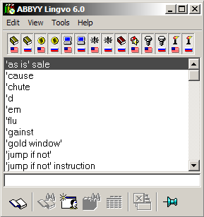
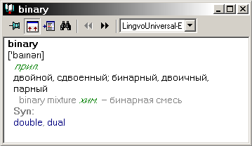
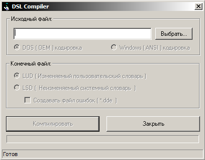

Lingvo 6.0
Замечания
Версия программы выпущена в 1999 году.
Поддерживаются только два языковых направления: английское и русское.
В этой версии впервые начинают использоваться форматы *.lsd и *.lud.
Впервые в комплекте с программой поставляется оконный компилятор «DSL Compiler» (по сравнению с консольным в версии 4.0). Прилагается также отдельный файл DSL1.HLP с описанием синтаксиса языка DSL.
По сравнению с версией 4.0 вводятся в употребление тэги:
- полужирного начертания [b]
- наклонного начертания [i]
- подчёркнутого текста [u]
- цветного текста (в базовой форме) [c]
- отступов [m]
- зоны вторичного отображения [*]
- зоны переводов [trn]
- зоны примеров [ex]
- зоны словарных комментариев [com]
- исключения из поисковой обработки [!trs]
- ссылок в пределах текущего словаря << >>
В справочном руководстве не упоминается о возможности создания аннотаций к пользовательским словарям. Однако, по факту, компилятор принимает аннотации и присоединяет их к словарю.
Также в документации отсутствует упоминание об иконках для пользовательских словарей. По факту компилятор принимает две иконки: большую и маленькую, для двух режимов отображения кнопок на панели инструментов программы. Для большой иконки используется изображение *.bmp с размерами 12х24 пикселей, для маленькой – 12х15 пикселей.
Ещё одной недокументированной возможностью является использование директив предварительной обработки. В словарях этой версии используются две директивы: #FULL_NAME – наименование словаря, и #LANGUAGE – язык словарных заголовков.
Любопытно, что настройка цвета для тэга [c] в диалоге настроек именуется «Labels». Видимо на этой стадии развития, тэг [c] несёт функции тэга [p], который возник позже.
Также, в диалоге настроек программы, серый цвет по умолчанию присвоен отображению «Optional text» / «Факультативный текст», что, по-видимому, свидетельствует об отношении этого цвета к зоне вторичного отображения (см. недоумение по поводу наименования этой настройки в более поздних версиях).
Внешний вид
Вид основного окна программы.

Вид словарной карточки.

Вкладка «Цвет» в диалоге настроек программы.

Вид окна компилятора пользовательских словарей.

Состав словарей
Англо-русские и русско-английские словари
| № | Наименование | Автор, издание | Объём |
|---|---|---|---|
| 1. | LingvoUniversal-E Англо-русский словарь общей лексики The Universal English-Russian Dictionary | © ABBYY. 1999. - 1-е изд. | Ок. 90 тыс. статей. |
| 2. | LingvoUniversal-R Русско-английский словарь общей лексики The Universal Russian-English Dictionary | © ABBYY. 1999. - 1-е изд. | 70 тыс. статей |
| 3. | LingvoEconomy-E Англо-русский экономический словарь The English-Russian Dictionary of Economics | © ABBYY. 1995-1999, - 3-е изд., переработанное и дополненное | 50 тыс. статей |
| 4. | LingvoEconomy-R Русско-английский экономический словарь The Russian-English Dictionary of Economics Обратный словарь к LingvoEconomy-E | © ABBYY, 1995-1999. - 3-е изд., переработанное и дополненное | 35 тыс. статей |
| 5. | LingvoComputer-E Англо-русский словарь по вычислительной технике и программированию The English-Russian Dictionary of Computer Science | © ABBYY, Е.К. Масловский. 1999 г. - 1-е изд. | 50 тыс. статей |
| 6. | LingvoComputer-R Русско-ангийский словарь по вычислительной технике и программированию The Russian- English Dictionary of Computer Science Обратный словарь к LingvoComputer-E | © ABBYY, Е.К. Масловский. 1999 г. - 1-е изд. | 35 тыс. статей |
| 7. | LingvoScience-E Англо-русский научно-технический словарь The English-Russian Scientific Dictionary | © ABBYY. - 1-е изд. 1999 | 160 тыс. статей |
| 8. | LingvoScience-R Русско-английский научно-технический словарь The Russian- English Scientific Dictionary | © ABBYY. - 1-е изд. | 155 тыс. статей |
| 9. | LingvoSound-E Краткий англо-русский озвученный словарь The Concise English-Russian Sound Dictionary | © ABBYY. 1995-1999. - 2-е изд. | 5 тыс. статей |
| 10. | Polytechnical-R Русско-английский индекс индекс к Большому англо-русскому политехническому словарю | © РУССО. - 1-е изд. | Ок. 45 тыс. статей |
| 11. | OilAndGas-E Большой англо-русский словарь по нефти и газу English-Russian Dictionary on Oil and Gas | © ВНИИГАЗ, РАО "ГАЗПРОМ", 1998 Автор Е. Г. Коваленко Под научной редакцией члена-корреспондента РАН А.И. Гриценко | 50 тыс. статей |
| 12. | OilAndGas-R Русско-английский индекс к Большому англо-русскому словарю по нефти и газу | © ВНИИГАЗ, РАО "ГАЗПРОМ", 1998 | 35 тыс. статей |
Русские словари
| № | Наименование | Автор, издание | Объём |
|---|---|---|---|
| 1. | LingvoThesaurus-R Тезаурус русской деловой лексики The Thesaurus of Russian Business Words | © ABBYY. 1997-1999 - 2-е изд. | 16 тыс. статей |